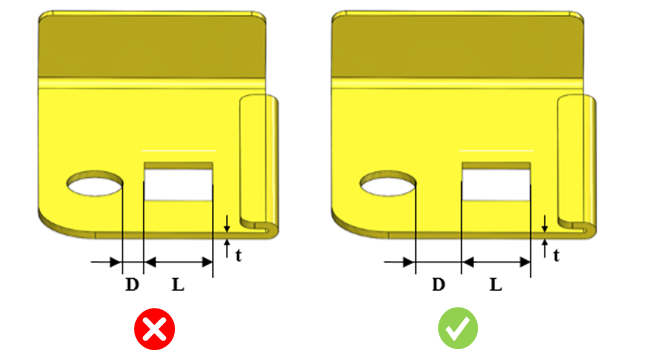

カットアウト間の最小距離は、ユーザー指定の値に従う必要があります。
カットアウト同士が近すぎると、製作時に問題が発生する可能性があります。打ち抜き加工の場合、割れや破断を引き起こすような薄い断面部の間を打ち抜くと、その部分が金型の一部によって阻害され、生産が成り立たなくなることがあります。また、形状要素が密集していることでクランプのための十分なスペースが確保できず、歪みが発生する場合もあります。
カットアウト間距離と板厚の比は、2.0以上である必要があります。
カットアウト間距離と板厚の比（スロット長さに対して）は、ユーザー指定の値以上である必要があります。
ユーザーは、デフォルトで構成されている値を変更できます。

ここでは、
D = カットアウト間の最小距離
L = カットアウト長さ
t = 板厚
ユーザーは、Importボタンを使用して、Excelシートテンプレート内にある一括データをインポートできます。
標準テンプレート形式:
L1/t |
L2/t |
D/t |
0 |
10 |
1 |
10 |
25 |
2 |
25 |
|
2.5 |
注記:
面取り（チャンファー）付きのカットアウトもサポートされています。
モデルに穿孔（パーフォレート）カットアウトが含まれており、ルールファイルで「穿孔カットアウト間の最小距離」ルールが選択されている場合、それらのカットアウトはこの特定ルールを使用して解析されます。ただし、このルールが選択されていない場合、穿孔カットアウトは「カットアウト間の最小距離」ルールによって解析されます。
「カットアウト長さに基づく」オプションでは、以下の標準形状のカットアウトがサポートされています。
ここでは、
L = カットアウト長さ